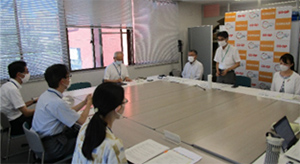
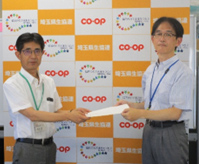

2022年度埼玉県と埼玉県生協連との第1回定期協議を開催しました
7月29日（金）10時より、埼玉県生協連多目的室にて、第1回定期協議を開催しました。
| 出席者 | 若松孝治(消費生活課課長)、髙杉健五（消費生活課主幹）、松本由美子(消費生活課主査)、吉川尚彦(埼玉県生協連会長理事)、大久保美紀(埼玉県生協連常務理事)、長谷川悟（コープみらい執行役員）、増永哲士（医療生協さいたま専務理事）、清水勤(事務局長)〔敬称略〕 |
はじめに、消費生活課課長若松さんより、埼玉県消費生活基本計画では、消費者被害の未然防止、消費者教育の推進、持続可能な消費生活社会の実現を中心に取り組んでいくこと、特に、成年年齢引き下げによる若年層への消費者教育を重点に、生協との連携を取りながらすすめていくとのあいさつがありました。
吉川会長理事からは、コロナが急拡大しており、医療生協や地域生協でも対応に苦慮している状況の中、災害が発生する可能性が高いことから、埼玉県生協連の災害対策委員会にて、埼玉県災害対策課から埼玉県防災計画、埼玉県の情報提供について講演いただいたことに対するお礼を述べました。
次に、埼玉県から、2021年度生協指導検査実施報告と今年度の計画について報告がありました。埼玉県生協連からは、2023年度埼玉県予算編成ならびに行政執行に関する要望について説明し、コープみらいからは生活困窮者支援状況について、医療生協さいたまからは緊急包括支援事業へのお礼やコロナ感染拡大に伴う医療現場の状況などについて報告しました。
2023年度埼玉県への要望書はこちらから（PDFにリンク）

